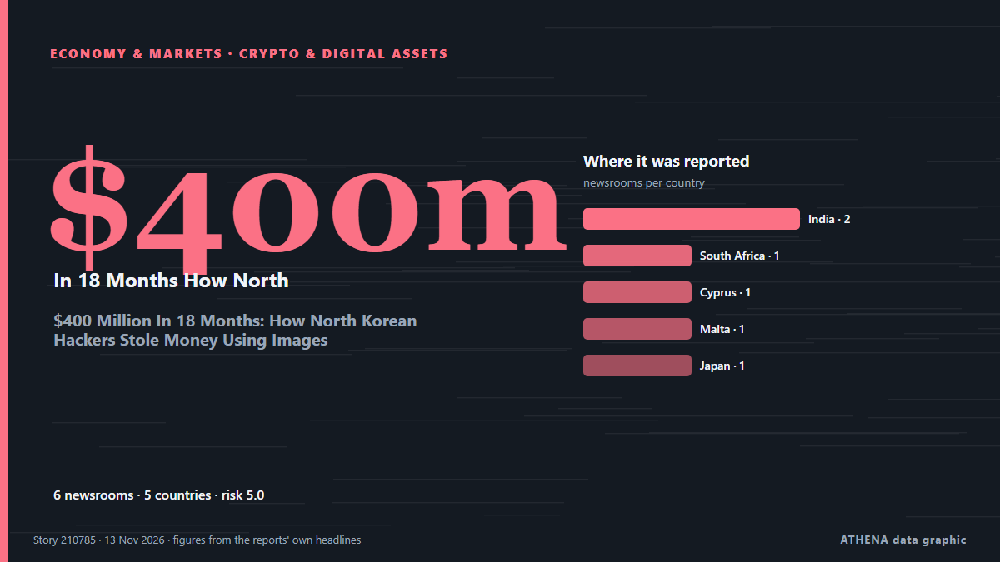

Κυβερνοασφάλεια
ΧορηγούμενοΠαρουσιάζεται από  Cybernetics and Artificial Intelligence Lab Welcome to the Cybernetics and Artificial Intelligence Laboratory, established at the Department of Business Administration of the National and Kapodistrian University of Athens. The lab is headed by Professor Dimitrios Thomakos. The lab aims to do research that can be published in top venues. Our research uses tools and methods of Artificial Intelligence, and lies in the following areas: - Forecasting - Decision making - Cyber security - Finance We are always looking forward to collaborating with exceptional students!
Cybernetics and Artificial Intelligence Lab Welcome to the Cybernetics and Artificial Intelligence Laboratory, established at the Department of Business Administration of the National and Kapodistrian University of Athens. The lab is headed by Professor Dimitrios Thomakos. The lab aims to do research that can be published in top venues. Our research uses tools and methods of Artificial Intelligence, and lies in the following areas: - Forecasting - Decision making - Cyber security - Finance We are always looking forward to collaborating with exceptional students!
| 1 Νοε | 0 |
|---|---|
| 2 Νοε | 0 |
| 3 Νοε | 0 |
| 4 Νοε | 0 |
| 5 Νοε | 0 |
| 6 Νοε | 0 |
| 7 Νοε | 0 |
| 8 Νοε | 0 |
| 9 Νοε | 0 |
| 10 Νοε | 5 |
| 11 Νοε | 4 |
| 12 Νοε | 1 |
| 13 Νοε | 2 |
| 14 Νοε | 0 |
Οι τίτλοι των ειδήσεων παρουσιάζονται στα αγγλικά, όπως δημοσιεύτηκαν.

$400 Million In 18 Months: How North Korean Hackers Stole Money Using Images
The targets are issued invitations from genuine contacts they have previously interacted with, but whose social media and communication accounts have been compromised and whose images have been… από NDTV
Summer Walker Countersued by LVRN for Commissions and Royalties: ‘Stubbornly Litigious’
The label/management firm says Walker has breached their contract. από Billboard
France's cyberattack allegations against Iran should wake up Europe
A supermarket refrigerator might seem an unlikely instrument of geopolitical confrontation. από Iran International (English)
Singapore’s SPH media hit by cyberattacks, personal database exposed
The company assures that no credit card details, financial or banking information, or customer account credentials were compromised. από Free Malaysia Today
Git Patches Flaw That Lets Malicious Repositories Execute Code During Recursive Clones
A flaw in Git can let a malicious repository run an attacker's code on a computer that clones it recursively, together with its submodules. από The Hacker News
Dreeze Emerges From Stealth With $33M to Rebuild Cloud Apps After Cyberattacks
Created by Zerto and Kashya veterans, the startup has launched a platform designed to recover whole cloud applications. από SecurityWeek
Cisco BroadWorks and Openwave Flaws Actively Exploited Despite Available Patches
The flaws, CVE-2026-111793 and CVE-2026-20320, let attackers leak sensitive information, including configuration data. από SecurityWeek